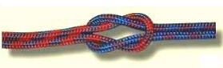

Tematika
- A vízi telep rendjének megtanítása.
- A hajók tárolásának megtanítása, betartása.
- Az eszközökre való igényesség megtanítása.
- Hajók precíz, biztonságos, önálló felszerelése.
- Alapvető haladási irányok megismerése:
- félszél
- hátszél
- háromnegyed szél
- negyed szél
- Manőverek megismerése:
- élesedés
- leejtés
- fordulás
- perdülés
Jótanácsok
A tanítás első lépése mindig a szélirány meghatározásával történjen. Tanítsuk meg a gyerekeknek, milyen módon milyen eszközökkel lehet a szélirányt hozzávetőlegesen meghatározni.
A haladási irányok előtt a szélbeállás helyzetét ismertessük meg velük először. Minden egyes iránynak a nevét, a hajó haladásának legfontosabb ismérveit mutassuk be nekik. A hajó haladási irányára és a szél viszonyára igyekezzünk mindig olyan kulcsszavakat használni (hátszél: hátulról fújja a hajót a szél), amely segíti a tanulást.
A gyakorlati bemutatás a már említett tároló kocsin lévő felszerelt hajóval történjen. A tanítás során mindig térjünk ki a szél irányának és a haladási iránynak a viszonyára, valamint a vitorla beállítására is (pl.: hátszél: hátulról fúj a szél, teljesen kiengedem a vitorlát).

Csomó fajták
| Csomó neve | Csomó képe |
|---|---|
 |
Egyszerű csomó |
|  | Takács csomó |
 |
Palstek csomó |
 |
Kikötő nyolcas |
Észrevételek
Isten, áldd meg a magyart Jó kedvvel, bőséggel, Nyújts feléje védő kart, Ha küzd ellenséggel; Bal sors akit régen tép, Hozz rá víg esztendőt, Megbünhödte már e nép A multat s jövendőt!
Őseinket felhozád Kárpát bércére,
Általad nyert szép hazát Bendegúznak vére. S merre zúgnak habjai
Tiszának, Dunának, Árpád hős magzatjai Felvirágozának.